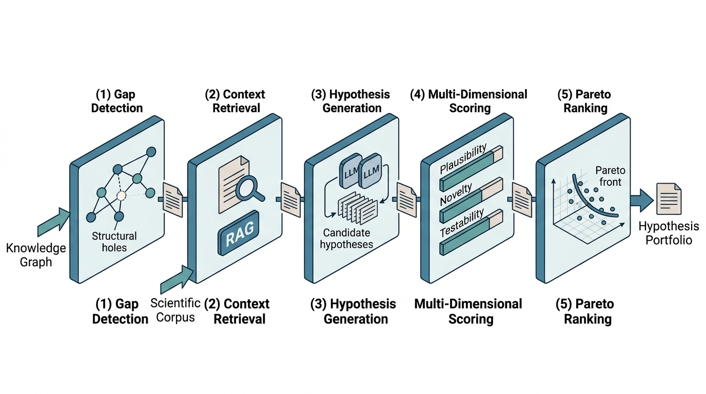

Prerequisites
This section integrates everything from the preceding two sections: structural hole detection and analogical transfer from Section 39.1, and LLM-based generation with multi-dimensional scoring from Section 39.2. You should also be comfortable with the Retrieval-Augmented Generation (RAG) retrieval patterns from Chapter 37 (we use them for evidence retrieval) and the knowledge graph construction techniques from Chapter 38 (we start from a constructed graph). Familiarity with the Discovery Workbench architecture from Chapter 6 helps with the integration section but is not required to follow the pipeline code.
This section is the recipe chapter: we assemble all the components into a single, runnable pipeline. The input is a knowledge graph and a corpus of scientific papers. The output is a ranked list of hypotheses, each scored for plausibility, novelty, and testability, with supporting evidence and suggested experiments. Along the way, we address the engineering challenges that arise when connecting graph analysis, embedding search, large language model (LLM) generation, and Bayesian scoring into a coherent system: error handling, caching, cost management, and result presentation. The pipeline produces a hypothesis portfolio that a scientist can review in minutes and a research agent (Chapter 40) can pursue autonomously.
1. Pipeline Architecture
What if you could hand a computer a graph of everything science knows about neurodegeneration, walk away for ten minutes, and come back to a ranked shortlist of testable hypotheses that no human researcher has proposed? The pipeline in this section does exactly that, in five stages that each produce a typed intermediate artifact following the general Discovery Workbench pattern from Chapter 6, ready to be inspected, cached, and reused. Figure 39.3.1 illustrates the five-stage hypothesis generation pipeline architecture.

- Gap Detection: Analyze the knowledge graph for structural holes (missing connections between otherwise well-connected communities) and embedding-space gaps (Section 39.1).
- Context Retrieval: For each top-scoring gap, retrieve relevant passages from the scientific corpus using RAG (Chapter 37).
- Hypothesis Generation: Use an LLM to generate candidate hypotheses grounded in the retrieved context (Section 39.2).
- Multi-Dimensional Scoring: Score each hypothesis for plausibility, novelty, and testability (Section 39.2).
- Pareto Ranking and Presentation: Rank hypotheses using Pareto dominance (explained below) and present results for human review.
Figure 39.11 shows how these five stages connect. Each stage consumes the typed output of the previous one and produces a new typed artifact, so any stage can be inspected, cached, or replaced independently.
Without a principled way to rank hypotheses across competing dimensions, scientists either drown in hundreds of unscored candidates or silently discard novel ideas because a single weighted formula penalizes anything unfamiliar. Pareto ranking solves this by surfacing every hypothesis that is optimal for some combination of priorities.
Pareto ranking is a multi-objective optimization technique that identifies solutions where no single objective can be improved without worsening another. It matters here because hypothesis evaluation involves inherently conflicting goals: a highly novel hypothesis is often less plausible, and vice versa. Collapsing these goals into a weighted sum forces an arbitrary choice of weights before seeing the results. The mechanism works by pairwise comparison. For each hypothesis, the algorithm counts how many others beat it on all three scoring dimensions simultaneously. Those that remain unbeaten form the "Pareto front" (rank 0). Use Pareto ranking whenever you have two or more scoring dimensions with no natural conversion rate between them. If your scores can be combined into a single number (for example, expected monetary value), a weighted sum suffices.
Checkpoint
So far: the pipeline has five stages (gap detection, context retrieval, LLM generation, multi-dimensional scoring, and Pareto ranking), where Pareto ranking surfaces every hypothesis that is optimal for at least one combination of plausibility, novelty, and testability, avoiding the need to choose weights in advance.
We implement this as a HypothesisGenerationPipeline class that
orchestrates the full flow. In short: the pipeline turns a knowledge graph and a corpus into a portfolio of hypotheses ranked without forcing anyone to choose weights.
import networkx as nx
import numpy as np
import json
import logging
from dataclasses import dataclass, field, asdict
from datetime import datetime
import anthropic
from qdrant_client import QdrantClient
from qdrant_client.models import Distance, VectorParams, PointStruct
from sentence_transformers import SentenceTransformer
logger = logging.getLogger(__name__)
@dataclass
class ScoredHypothesis:
"""A hypothesis with all three scoring dimensions."""
statement: str
domain: str
mechanism: str
supporting_evidence: list[str]
predictions: list[str]
assumptions: list[str]
source_gap: tuple[str, str]
gap_score: float
# Scoring dimensions
plausibility: float = 0.0
novelty: float = 0.0
testability: float = 0.0
# Testability details
experiment_type: str = ""
estimated_cost_usd: float = 0.0
estimated_duration_days: int = 0
# Pareto ranking
pareto_rank: int = 0 # 0 = Pareto-optimal front
dominated_by: int = 0 # Number of hypotheses that dominate this one
# Metadata
generated_at: str = field(
default_factory=lambda: datetime.now().isoformat()
)
model_used: str = ""
nearest_known_claims: list[str] = field(default_factory=list)
class HypothesisGenerationPipeline:
"""End-to-end pipeline for gap-based hypothesis generation.
Orchestrates gap detection, context retrieval, LLM generation,
multi-dimensional scoring, and Pareto ranking.
"""
def __init__(
self,
knowledge_graph: nx.Graph,
corpus_passages: list[str],
known_claims: list[str],
embedding_model: str = "all-MiniLM-L6-v2",
llm_model: str = "claude-sonnet-4-20250514",
):
self.G = knowledge_graph
self.corpus = corpus_passages
self.known_claims = known_claims
self.llm_model = llm_model
# Initialize embedding model and vector stores
self.embedder = SentenceTransformer(embedding_model)
self.qdrant = QdrantClient(":memory:")
# Index corpus for retrieval
self._index_corpus()
# Index known claims for novelty scoring
self._index_claims()
# Anthropic client
self.client = anthropic.Anthropic()
def _index_corpus(self):
"""Index corpus passages in Qdrant for retrieval."""
embeddings = self.embedder.encode(
self.corpus, normalize_embeddings=True
)
dim = embeddings.shape[1]
self.qdrant.create_collection(
collection_name="corpus",
vectors_config=VectorParams(
size=dim, distance=Distance.COSINE
),
)
points = [
PointStruct(id=i, vector=emb.tolist(),
payload={"text": text})
for i, (text, emb) in enumerate(
zip(self.corpus, embeddings)
)
]
self.qdrant.upsert(collection_name="corpus", points=points)
def _index_claims(self):
"""Index known claims for novelty scoring."""
embeddings = self.embedder.encode(
self.known_claims, normalize_embeddings=True
)
dim = embeddings.shape[1]
self.qdrant.create_collection(
collection_name="claims",
vectors_config=VectorParams(
size=dim, distance=Distance.COSINE
),
)
points = [
PointStruct(id=i, vector=emb.tolist(),
payload={"claim": claim})
for i, (claim, emb) in enumerate(
zip(self.known_claims, embeddings)
)
]
self.qdrant.upsert(collection_name="claims", points=points)
def run(
self,
max_gaps: int = 20,
hypotheses_per_gap: int = 3,
min_gap_score: float = 0.1,
) -> list[ScoredHypothesis]:
"""Execute the full hypothesis generation pipeline.
Args:
max_gaps: Maximum number of gaps to process.
hypotheses_per_gap: Hypotheses to generate per gap.
min_gap_score: Minimum gap score threshold.
Returns:
Pareto-ranked list of scored hypotheses.
"""
# Stage 1: Gap Detection
logger.info("Stage 1: Detecting knowledge gaps...")
gaps = self._detect_gaps(max_gaps, min_gap_score)
logger.info(f"Found {len(gaps)} gaps above threshold.")
# Stage 2-3: Context Retrieval + Hypothesis Generation
all_hypotheses = []
for entity_a, entity_b, gap_score in gaps:
logger.info(
f"Processing gap: {entity_a} <-> {entity_b} "
f"(score={gap_score:.3f})"
)
# Retrieve context
context = self._retrieve_context(entity_a, entity_b)
# Generate hypotheses
hypotheses = self._generate_hypotheses(
entity_a, entity_b, context,
n=hypotheses_per_gap, gap_score=gap_score,
)
all_hypotheses.extend(hypotheses)
logger.info(
f"Generated {len(all_hypotheses)} raw hypotheses."
)
# Stage 4: Multi-Dimensional Scoring
logger.info("Stage 4: Scoring hypotheses...")
scored = self._score_all(all_hypotheses)
# Stage 5: Pareto Ranking
logger.info("Stage 5: Computing Pareto ranking...")
ranked = self._pareto_rank(scored)
logger.info(
f"Pipeline complete. "
f"{sum(1 for h in ranked if h.pareto_rank == 0)} "
f"hypotheses on the Pareto front."
)
return ranked
def _detect_gaps(
self,
max_gaps: int,
min_score: float,
) -> list[tuple[str, str, float]]:
"""Detect structural holes in the knowledge graph."""
# Louvain community detection partitions the graph into
# densely connected groups; gaps between communities are
# the most promising sites for novel hypotheses.
communities = nx.community.louvain_communities(
self.G, seed=42
)
node_to_comm = {}
for idx, comm in enumerate(communities):
for node in comm:
node_to_comm[node] = idx
candidates = [n for n, d in self.G.degree() if d >= 2]
path_lengths = dict(
nx.all_pairs_shortest_path_length(self.G, cutoff=4)
)
from itertools import combinations
gaps = []
for u, v in combinations(candidates, 2):
if self.G.has_edge(u, v):
continue
dist = path_lengths.get(u, {}).get(v)
if dist is None or dist > 4:
continue
if node_to_comm.get(u) == node_to_comm.get(v):
continue
n_u = set(self.G.neighbors(u))
n_v = set(self.G.neighbors(v))
union = n_u | n_v
if not union:
continue
jaccard_comp = 1.0 - len(n_u & n_v) / len(union)
score = (len(n_u) * len(n_v) / dist**2) * jaccard_comp
if score >= min_score:
gaps.append((u, v, score))
gaps.sort(key=lambda x: x[2], reverse=True)
return gaps[:max_gaps]
def _retrieve_context(
self,
entity_a: str,
entity_b: str,
top_k: int = 8,
) -> list[str]:
"""Retrieve relevant corpus passages for a gap."""
query = f"{entity_a} {entity_b} relationship mechanism"
q_emb = self.embedder.encode(
[query], normalize_embeddings=True
)[0]
results = self.qdrant.search(
collection_name="corpus",
query_vector=q_emb.tolist(),
limit=top_k,
)
return [r.payload["text"] for r in results]
def _generate_hypotheses(
self,
entity_a: str,
entity_b: str,
context: list[str],
n: int = 3,
gap_score: float = 0.0,
) -> list[ScoredHypothesis]:
"""Generate hypotheses for a gap using Claude."""
context_block = "\n\n".join(
f"[{i+1}]: {p}" for i, p in enumerate(context)
)
prompt = f"""Knowledge gap between "{entity_a}" and "{entity_b}".
Literature context:
{context_block}
Generate {n} distinct, testable hypotheses about how {entity_a}
and {entity_b} might be related. Each hypothesis must propose a
DIFFERENT mechanism.
Return a JSON array where each element has:
- "statement": one-sentence hypothesis
- "domain": scientific domain
- "mechanism": 2-3 sentence causal explanation
- "supporting_evidence": list of evidence points from the context
- "predictions": list of specific, falsifiable predictions
- "assumptions": list of assumptions that must hold"""
response = self.client.messages.create(
model=self.llm_model,
max_tokens=4096,
system="You are a scientific hypothesis generator. "
"Return ONLY valid JSON. Be specific and precise.",
messages=[{"role": "user", "content": prompt}],
)
text = response.content[0].text
if "```json" in text:
text = text.split("```json")[1].split("```")[0]
elif "```" in text:
text = text.split("```")[1].split("```")[0]
try:
raw = json.loads(text)
except json.JSONDecodeError:
logger.warning(
f"Failed to parse LLM output for gap "
f"{entity_a}<->{entity_b}"
)
return []
if isinstance(raw, dict):
raw = [raw]
hypotheses = []
for h in raw:
hypotheses.append(ScoredHypothesis(
statement=h.get("statement", ""),
domain=h.get("domain", "unknown"),
mechanism=h.get("mechanism", ""),
supporting_evidence=h.get("supporting_evidence", []),
predictions=h.get("predictions", []),
assumptions=h.get("assumptions", []),
source_gap=(entity_a, entity_b),
gap_score=gap_score,
model_used=self.llm_model,
))
return hypotheses
def _score_all(
self,
hypotheses: list[ScoredHypothesis],
) -> list[ScoredHypothesis]:
"""Score all hypotheses on three dimensions."""
for h in hypotheses:
# Plausibility: semantic consistency with evidence
h.plausibility = self._score_plausibility(h)
# Novelty: embedding distance from known claims
novelty_result = self._score_novelty(h)
h.novelty = novelty_result["score"]
h.nearest_known_claims = novelty_result["nearest"]
# Testability: experiment cost estimation
h.testability = self._score_testability(h)
return hypotheses
def _score_plausibility(self, h: ScoredHypothesis) -> float:
"""Plausibility as semantic consistency with evidence."""
if not h.supporting_evidence:
return 0.3 # Low default for unsupported hypotheses
all_texts = [h.statement] + h.supporting_evidence
embeddings = self.embedder.encode(
all_texts, normalize_embeddings=True
)
h_emb = embeddings[0]
e_embs = embeddings[1:]
similarities = e_embs @ h_emb
# Weight by gap score (higher gap score = stronger prior)
base = float(np.mean(similarities))
prior_boost = h.gap_score / (h.gap_score + 1.0)
return float(np.clip(
0.7 * base + 0.3 * prior_boost, 0.0, 1.0
))
def _score_novelty(
self, h: ScoredHypothesis,
) -> dict:
"""Novelty as distance from nearest known claim."""
h_emb = self.embedder.encode(
[h.statement], normalize_embeddings=True
)[0]
results = self.qdrant.search(
collection_name="claims",
query_vector=h_emb.tolist(),
limit=3,
)
if not results:
return {"score": 1.0, "nearest": []}
max_sim = results[0].score
nearest = [r.payload["claim"] for r in results]
return {
"score": float(1.0 - max_sim),
"nearest": nearest,
}
def _score_testability(self, h: ScoredHypothesis) -> float:
"""Testability based on LLM experiment cost estimation."""
import math
prompt = f"""Briefly assess the testability of this hypothesis.
Hypothesis: {h.statement}
Predictions: {json.dumps(h.predictions[:3])}
Choose the cheapest experiment type that could test this:
- computational_simulation ($10/run, 1 day)
- spectroscopy_measurement ($200/run, 1 day)
- genomics_sequencing ($300/run, 7 days)
- cell_culture_assay ($500/run, 14 days)
- materials_synthesis ($1000/run, 7 days)
- animal_model ($5000/run, 90 days)
- clinical_trial_phase1 ($1000000/run, 365 days)
Return JSON: {{"experiment_type": "...", "runs_needed": N}}"""
try:
response = self.client.messages.create(
model=self.llm_model,
max_tokens=256,
messages=[{"role": "user", "content": prompt}],
)
text = response.content[0].text
if "```json" in text:
text = text.split("```json")[1].split("```")[0]
elif "```" in text:
text = text.split("```")[1].split("```")[0]
data = json.loads(text)
exp_type = data.get(
"experiment_type", "cell_culture_assay"
)
runs = data.get("runs_needed", 10)
cost_table = {
"computational_simulation": 10,
"spectroscopy_measurement": 200,
"genomics_sequencing": 300,
"cell_culture_assay": 500,
"materials_synthesis": 1000,
"animal_model": 5000,
"clinical_trial_phase1": 1_000_000,
}
cost_per = cost_table.get(exp_type, 500)
total = cost_per * runs
h.experiment_type = exp_type
h.estimated_cost_usd = total
# Log-scale normalization: $10 -> 1.0, $10M -> 0.0
score = 1.0 - math.log10(total + 1) / 7.0
return float(np.clip(score, 0.0, 1.0))
except (json.JSONDecodeError, KeyError):
h.experiment_type = "unknown"
h.estimated_cost_usd = 0
return 0.5 # Default middle score on parse failure
def _pareto_rank(
self,
hypotheses: list[ScoredHypothesis],
) -> list[ScoredHypothesis]:
"""Assign Pareto ranks based on three scoring dimensions.
A hypothesis H1 dominates H2 if H1 is at least as good
as H2 on ALL three dimensions and strictly better on at
least one. The Pareto front (rank 0) consists of
non-dominated hypotheses.
"""
n = len(hypotheses)
scores = np.array([
[h.plausibility, h.novelty, h.testability]
for h in hypotheses
])
# Count dominations
for i in range(n):
count = 0
for j in range(n):
if i == j:
continue
# j dominates i if j >= i on all and j > i on some
if (np.all(scores[j] >= scores[i])
and np.any(scores[j] > scores[i])):
count += 1
hypotheses[i].dominated_by = count
hypotheses[i].pareto_rank = count # Rank = # dominators
# Sort by Pareto rank, then by sum of scores within rank
hypotheses.sort(
key=lambda h: (
h.pareto_rank,
-(h.plausibility + h.novelty + h.testability),
)
)
return hypothesesHypothesisGenerationPipeline class with ScoredHypothesis dataclass. Five stages flow from Louvain-based gap detection through pairwise Pareto ranking, producing a scored and sorted portfolio of hypotheses with typed intermediate results at each stage.A common approach to multi-objective ranking is to compute a weighted sum: \(\text{Score} = w_1 \cdot \text{plausibility} + w_2 \cdot \text{novelty} + w_3 \cdot \text{testability}\). But what weights should we use? A plausibility-heavy weighting favors safe, incremental hypotheses. A novelty-heavy weighting favors speculative leaps. Pareto ranking sidesteps this problem entirely: it identifies hypotheses that are not dominated on any dimension, regardless of weights. A hypothesis on the Pareto front is optimal for some choice of weights, meaning a scientist reviewing the front is guaranteed to find the best hypothesis for their particular risk appetite and resource constraints. In practice, the Pareto front tends to be small (often 5 to 15 hypotheses from a pool of 50 to 100, depending on score correlation), making human review tractable.
Mental Model
Think of Pareto ranking like choosing restaurants for a group dinner. Each restaurant has three qualities: food quality, price, and location convenience. Restaurant A has the best food but is expensive and far away. Restaurant B is cheap and nearby but mediocre. Restaurant C has good food at a moderate price in a decent location. None of these three is strictly better than the others on all dimensions, so all three sit on the "Pareto front" of non-dominated options. A fourth restaurant that is more expensive, farther away, AND has worse food than C is dominated and drops off the front. The Pareto front gives your group exactly the set of defensible choices; which one you pick depends on what your group values most, but every option on the front is optimal for some weighting of priorities.
2. Running the Pipeline
The following example shows how the full pipeline performs on real scientific data.
Let us run the complete pipeline on a concrete example: hypothesis generation for a biomedical knowledge graph focused on neurodegeneration. We construct a knowledge graph from known gene-disease and drug-target relations, provide a corpus of relevant abstracts, and examine the output:
import networkx as nx
# Construct a biomedical knowledge graph
G = nx.Graph()
# Gene-disease relations (neurodegenerative focus)
gene_disease = [
("APP", "alzheimers"), ("PSEN1", "alzheimers"),
("MAPT", "alzheimers"), ("MAPT", "ftd"),
("SNCA", "parkinsons"), ("LRRK2", "parkinsons"),
("GBA", "parkinsons"), ("GBA", "gaucher"),
("SOD1", "als"), ("C9orf72", "als"), ("C9orf72", "ftd"),
("HTT", "huntingtons"),
("TREM2", "alzheimers"), ("TREM2", "neuroinflammation"),
("APOE", "alzheimers"), ("APOE", "cardiovascular"),
]
# Gene-gene interactions
gene_gene = [
("APP", "PSEN1"), ("APP", "MAPT"), ("SNCA", "LRRK2"),
("SNCA", "GBA"), ("SOD1", "C9orf72"),
("TREM2", "APOE"), ("LRRK2", "GBA"),
]
# Drug-target relations
drug_target = [
("lecanemab", "APP"), ("aducanumab", "APP"),
("levodopa", "dopamine_system"), ("SNCA", "dopamine_system"),
("riluzole", "glutamate_system"), ("SOD1", "glutamate_system"),
("donepezil", "acetylcholine_system"),
("acetylcholine_system", "alzheimers"),
]
# Pathway connections
pathways = [
("neuroinflammation", "alzheimers"),
("neuroinflammation", "parkinsons"),
("neuroinflammation", "als"),
("autophagy", "parkinsons"), ("GBA", "autophagy"),
("LRRK2", "autophagy"),
("mitochondria", "parkinsons"), ("mitochondria", "als"),
("protein_aggregation", "alzheimers"),
("protein_aggregation", "parkinsons"),
("protein_aggregation", "huntingtons"),
]
G.add_edges_from(
gene_disease + gene_gene + drug_target + pathways
)
# Sample corpus passages (in production, retrieved from PubMed)
corpus = [
"TREM2 variants increase Alzheimer's risk through impaired "
"microglial clearance of amyloid plaques.",
"GBA mutations cause lysosomal dysfunction, leading to "
"alpha-synuclein accumulation in Parkinson's disease.",
"Neuroinflammation is a shared pathological feature across "
"Alzheimer's, Parkinson's, and ALS.",
"LRRK2 kinase activity regulates autophagy flux and is "
"elevated in Parkinson's disease brain tissue.",
"C9orf72 repeat expansions cause both ALS and FTD through "
"RNA toxicity and dipeptide repeat proteins.",
"APOE4 impairs blood-brain barrier integrity and promotes "
"neuroinflammation independent of amyloid pathology.",
"Mitochondrial dysfunction is an early feature of both "
"Parkinson's disease and ALS pathogenesis.",
"The autophagy-lysosome pathway is a convergence point for "
"multiple neurodegenerative disease mechanisms.",
"Protein aggregation, once initiated, can spread between "
"cells in a prion-like manner across brain regions.",
"Microglial activation states shift from neuroprotective to "
"neurotoxic during disease progression.",
]
# Known claims (for novelty scoring)
known_claims = [
"TREM2 loss of function increases Alzheimer's disease risk.",
"GBA mutations are the most common genetic risk factor for "
"Parkinson's disease.",
"Lecanemab reduces amyloid plaques in Alzheimer's patients.",
"Neuroinflammation contributes to neurodegeneration.",
"LRRK2 G2019S is the most common genetic cause of familial "
"Parkinson's disease.",
"Alpha-synuclein aggregation is a hallmark of Parkinson's.",
"APOE4 is the strongest genetic risk factor for late-onset "
"Alzheimer's disease.",
]
# Run the pipeline
pipeline = HypothesisGenerationPipeline(
knowledge_graph=G,
corpus_passages=corpus,
known_claims=known_claims,
llm_model="claude-sonnet-4-20250514",
)
results = pipeline.run(
max_gaps=10,
hypotheses_per_gap=3,
min_gap_score=0.1,
)
# Display Pareto-optimal hypotheses
print("=" * 60)
print("PARETO-OPTIMAL HYPOTHESES (Rank 0)")
print("=" * 60)
for h in results:
if h.pareto_rank > 0:
break
print(f"\n--- {h.source_gap[0]} <-> {h.source_gap[1]} ---")
print(f"Statement: {h.statement}")
print(f"Plausibility: {h.plausibility:.3f}")
print(f"Novelty: {h.novelty:.3f}")
print(f"Testability: {h.testability:.3f}")
print(f"Experiment: {h.experiment_type}")
print(f"Est. cost: ${h.estimated_cost_usd:,.0f}")
if h.nearest_known_claims:
print(f"Nearest claim: {h.nearest_known_claims[0][:80]}...")3. Visualization and Export
A ranked list of hypotheses is useful, but a structured export makes the portfolio portable and machine-readable. The following utility writes the scored hypotheses as JSON files that downstream tools (visualization scripts, research agents, or the Discovery Workbench) can consume directly. The lab exercise at the end of this section walks through building an interactive 3D scatter plot from this exported data:
import json
from pathlib import Path
from dataclasses import asdict
def export_hypothesis_portfolio(
hypotheses: list[ScoredHypothesis],
output_dir: str = "hypothesis_portfolio",
) -> Path:
"""Export scored hypotheses as a structured JSON portfolio.
Creates a directory with:
- portfolio.json: Full scored hypothesis data
- summary.json: Pareto front summary for quick review
- per-hypothesis detail files
"""
out = Path(output_dir)
out.mkdir(parents=True, exist_ok=True)
# Full portfolio
portfolio = {
"generated_at": datetime.now().isoformat(),
"total_hypotheses": len(hypotheses),
"pareto_front_size": sum(
1 for h in hypotheses if h.pareto_rank == 0
),
"hypotheses": [
{
"rank": i,
"pareto_rank": h.pareto_rank,
"statement": h.statement,
"domain": h.domain,
"mechanism": h.mechanism,
"source_gap": list(h.source_gap),
"scores": {
"plausibility": round(h.plausibility, 4),
"novelty": round(h.novelty, 4),
"testability": round(h.testability, 4),
},
"experiment": {
"type": h.experiment_type,
"estimated_cost_usd": h.estimated_cost_usd,
"estimated_duration_days": h.estimated_duration_days,
},
"predictions": h.predictions,
"assumptions": h.assumptions,
"supporting_evidence": h.supporting_evidence,
"nearest_known_claims": h.nearest_known_claims,
}
for i, h in enumerate(hypotheses)
],
}
portfolio_path = out / "portfolio.json"
portfolio_path.write_text(json.dumps(portfolio, indent=2))
# Summary of Pareto front for quick review
pareto_front = [
{
"statement": h.statement,
"scores": f"P={h.plausibility:.2f} "
f"N={h.novelty:.2f} "
f"T={h.testability:.2f}",
"experiment": h.experiment_type,
"cost": f"${h.estimated_cost_usd:,.0f}",
}
for h in hypotheses if h.pareto_rank == 0
]
summary_path = out / "summary.json"
summary_path.write_text(json.dumps(pareto_front, indent=2))
logger.info(
f"Exported {len(hypotheses)} hypotheses to {out}. "
f"Pareto front: {len(pareto_front)} hypotheses."
)
return outportfolio.json file contains full scoring details, experiment metadata, and nearest known claims; the summary.json file contains only the Pareto front for quick human review.4. Interpreting the Scoring Landscape
The structured JSON portfolio is portable, but its real value emerges when scientists read the three scoring dimensions as a diagnostic of each hypothesis.
The three scoring dimensions create a natural taxonomy of hypothesis types. Understanding this taxonomy helps scientists navigate the portfolio:
Three Hypothesis Archetypes
High plausibility, low novelty, high testability: incremental hypotheses. These propose well-grounded extensions of existing knowledge that can be tested cheaply. They are the "safe bets" of the portfolio, likely to yield positive results but unlikely to produce surprising discoveries. Example: "LRRK2 kinase inhibitors reduce neuroinflammation in Parkinson's disease models" (plausible because both LRRK2 and neuroinflammation are established Parkinson's factors; low novelty because the connection is already suspected; testable with standard cell culture assays).
Moderate plausibility, high novelty, moderate testability: frontier hypotheses. These propose connections that are consistent with some evidence but have not been explored. They are the highest-value targets for discovery. Example: "GBA lysosomal dysfunction contributes to Alzheimer's pathology through impaired TREM2-mediated amyloid clearance" (moderately plausible because GBA and TREM2 are both linked to neurodegeneration through different pathways; novel because their interaction is unstudied; testable with cell culture but requiring specialized assays).
Low plausibility, high novelty, low testability: speculative hypotheses. These propose entirely new connections with limited supporting evidence. Most will turn out to be wrong, but the few that survive testing could be transformative. A research group pursuing these hypotheses needs a high tolerance for failure and the resources to invest in exploratory experiments.
Common Misconception
A frequent mistake is treating the novelty score as a quality indicator: "higher novelty means a better hypothesis." In reality, high novelty simply means the hypothesis is far from any known claim in embedding space (the high-dimensional vector representation where sentences with similar meaning lie close together), which is equally consistent with a genuinely original insight and with a nonsensical statement that no one has made because it is wrong. Novelty is only meaningful when read alongside plausibility; a hypothesis that scores high on novelty but near zero on plausibility is almost certainly noise, not discovery.
A computational biology lab with a \$200,000 annual research budget runs this pipeline on a knowledge graph of 5,000 genes and 2,000 diseases. The pipeline generates 150 hypotheses and identifies 12 on the Pareto front. The principal investigator (PI) reviews the front and selects three hypotheses to pursue: one incremental hypothesis that can be tested with existing cell lines (estimated cost: \$8,000; likely to yield a publication within 6 months), one frontier hypothesis requiring a new assay development (\$45,000; higher risk but potentially high-impact), and one speculative hypothesis delegated to a computational student for in-silico validation (\$500 in compute; if the simulation supports it, the wet-lab experiment follows). This portfolio strategy, mixing low-risk, medium-risk, and high-risk bets, resembles the portfolio diversification strategies that many research funding agencies encourage, and it increases the lab's expected discovery output per dollar by hedging across risk levels.
5. Integration with the Discovery Workbench
The hypothesis generation pipeline produces structured output (the JSON portfolio) that plugs directly into the Discovery Workbench architecture from Chapter 6. The integration points are:
- Knowledge graph input: the pipeline consumes graphs produced by the knowledge graph construction pipeline of Chapter 38.
- Corpus input: passages come from the RAG retrieval system of Chapter 37, which indexes the literature mined in Chapter 36.
- Hypothesis output: the scored portfolio feeds into the research agents of Chapter 40, which can autonomously pursue top-ranked hypotheses.
- Validation loop: hypotheses that survive research agent investigation enter the claim validation pipeline of Chapter 41.
class DiscoveryWorkbenchIntegration:
"""Connect the hypothesis pipeline to the Discovery Workbench.
Provides methods to load knowledge graphs and corpora from
the Workbench's data stores, run the pipeline, and publish
results back to the Workbench for downstream consumption
by research agents and claim validators.
"""
def __init__(self, workbench_config: dict):
self.config = workbench_config
self.pipeline = None
def load_from_workbench(
self,
kg_collection: str = "knowledge_graph",
corpus_collection: str = "literature_corpus",
claims_collection: str = "validated_claims",
):
"""Load pipeline inputs from Workbench data stores."""
# Load knowledge graph from the KG store (Chapter 38)
G = self._load_knowledge_graph(kg_collection)
# Load corpus from the RAG index (Chapter 37)
corpus = self._load_corpus(corpus_collection)
# Load known claims from the claim validator (Chapter 41)
claims = self._load_claims(claims_collection)
self.pipeline = HypothesisGenerationPipeline(
knowledge_graph=G,
corpus_passages=corpus,
known_claims=claims,
)
return self
def run_and_publish(
self,
max_gaps: int = 20,
hypotheses_per_gap: int = 3,
) -> list[ScoredHypothesis]:
"""Run the pipeline and publish results to the Workbench."""
results = self.pipeline.run(
max_gaps=max_gaps,
hypotheses_per_gap=hypotheses_per_gap,
)
# Publish to Workbench hypothesis store
self._publish_hypotheses(results)
# Notify research agents of new high-priority hypotheses
pareto_front = [h for h in results if h.pareto_rank == 0]
self._notify_research_agents(pareto_front)
return results
def _load_knowledge_graph(self, collection: str) -> nx.Graph:
"""Load KG from Workbench. Implementation depends on
the specific Workbench backend (Neo4j, NetworkX, etc.)."""
# Placeholder: in production, this reads from the
# Chapter 38 knowledge graph store
return nx.Graph()
def _load_corpus(self, collection: str) -> list[str]:
"""Load corpus from the RAG index."""
return []
def _load_claims(self, collection: str) -> list[str]:
"""Load validated claims from the claim store."""
return []
def _publish_hypotheses(
self, hypotheses: list[ScoredHypothesis]
):
"""Write scored hypotheses to the Workbench store."""
logger.info(
f"Published {len(hypotheses)} hypotheses "
f"to Workbench."
)
def _notify_research_agents(
self, pareto_front: list[ScoredHypothesis]
):
"""Notify research agents (Chapter 40) of new
high-priority hypotheses for autonomous investigation."""
logger.info(
f"Notified agents of {len(pareto_front)} "
f"Pareto-optimal hypotheses."
)DiscoveryWorkbenchIntegration class connecting the pipeline to the Workbench data stores. It loads knowledge graphs (Chapter 38), literature corpora (Chapters 36 and 37), and validated claims (Chapter 41), then publishes scored hypotheses and notifies research agents (Chapter 40) of Pareto-optimal results.
The pipeline above manually coordinates retrieval, generation, and scoring.
LlamaIndex provides a higher-level
abstraction for exactly this pattern. Using KnowledgeGraphRAGRetriever for
gap-aware retrieval, SubQuestionQueryEngine for decomposing hypothesis generation
into sub-queries, and ResponseEvaluator for automated scoring, the 400+ lines
of pipeline code above reduce to roughly 80 lines of LlamaIndex configuration. LlamaIndex
also handles caching, retry logic, and streaming output natively. For production deployment,
the LlamaIndex
agent framework wraps the pipeline as an autonomous agent that can be triggered by
knowledge graph updates, running hypothesis generation incrementally as new papers are
indexed.
As of 2025, LlamaIndex has undergone a major package restructuring
(the llama_index package split into llama-index-core plus
modular integration packages), and several class names referenced here have moved or
been renamed; consult the current LlamaIndex documentation for updated import paths.
6. Cost Management and Caching
Once the pipeline is wired into the Workbench and running on production-scale knowledge graphs, the dominant practical concern shifts from correctness to cost.
The pipeline makes multiple LLM calls per gap (generation + testability assessment), which can become expensive at scale. For a knowledge graph with 20 gaps and 3 hypotheses per gap, the pipeline makes approximately 80 API calls. At typical mid-2025 rates, this costs roughly \$2 to \$5 per pipeline run. (That is sixty testable scientific hypotheses for the price of a latte; the bottleneck has shifted entirely from generation to evaluation.) For daily runs on a large knowledge graph (200 gaps), the monthly cost can reach \$500 to \$1,500.
Two strategies keep costs manageable. First, cache LLM responses keyed by the prompt hash. When the pipeline re-analyzes the same gap with the same context (common during incremental knowledge graph updates), it reuses the cached response instead of calling the API again. Second, use a tiered model strategy. Route testability assessments to cheaper models (Claude Haiku or GPT-4o-mini), since the output is a short JSON classification. Reserve more capable models (Claude Sonnet or GPT-4o) for hypothesis generation, where output quality matters more:
import hashlib
import json
from pathlib import Path
class LLMCache:
"""Simple disk-based cache for LLM responses."""
def __init__(self, cache_dir: str = ".hypothesis_cache"):
self.cache_dir = Path(cache_dir)
self.cache_dir.mkdir(parents=True, exist_ok=True)
def _key(self, prompt: str, model: str) -> str:
content = f"{model}:{prompt}"
return hashlib.sha256(content.encode()).hexdigest()[:16]
def get(self, prompt: str, model: str) -> str | None:
path = self.cache_dir / f"{self._key(prompt, model)}.json"
if path.exists():
data = json.loads(path.read_text())
return data["response"]
return None
def put(self, prompt: str, model: str, response: str):
path = self.cache_dir / f"{self._key(prompt, model)}.json"
data = {
"prompt_hash": self._key(prompt, model),
"model": model,
"response": response,
}
path.write_text(json.dumps(data))
# Usage in the pipeline:
# cache = LLMCache()
# cached = cache.get(prompt, model)
# if cached:
# text = cached
# else:
# response = client.messages.create(...)
# text = response.content[0].text
# cache.put(prompt, model, text)LLMCache class for disk-based prompt-response caching. Each entry is keyed by a SHA-256 hash of the model name and prompt text, avoiding redundant API calls when the pipeline is re-run on incrementally updated knowledge graphs.The pipeline presented here generates hypotheses in a single pass. Emerging systems close the loop: hypotheses are generated, experiments are designed and executed (in simulation or in robotic labs), results are fed back into the knowledge graph, and new gaps emerge from the updated graph, triggering a new round of hypothesis generation. The COSCIENTIST system (Boiko et al., 2023) demonstrated this for chemical synthesis. The AI Scientist (Lu et al., 2024) closes the loop for machine learning research, generating hypotheses, running experiments, and writing papers autonomously. More recently, SciAgents (Ghafarollahi and Buehler, 2024) introduced a multi-agent architecture where specialized LLM agents collaborate on ontology-grounded hypothesis generation over large knowledge graphs, using a "Critic" agent to adversarially evaluate plausibility before any hypothesis reaches the ranking stage. SciAgents demonstrated that multi-agent debate substantially reduces the rate of implausible hypotheses compared to single-pass generation, pointing toward pipelines where scoring is partially replaced by structured agent deliberation. These closed-loop and multi-agent systems are the subject of Chapter 53: AI Scientists, where the hypothesis generation pipeline becomes one component of a fully autonomous discovery engine.
Try It: Pareto-Rank Your Own Hypotheses from a Small Knowledge Graph
Build a minimal hypothesis generation pipeline on your laptop using only Python standard
libraries plus networkx and sentence-transformers:
1. Install dependencies: pip install networkx sentence-transformers numpy. No
API key or database is needed for this exercise.
2. Construct a small knowledge graph (15 to 25 nodes) in a domain you know. Use Wikipedia
category pages or a textbook index to pick entities and manually add edges for known
relationships. Save it as an edge list with nx.write_edgelist(G, "my_kg.edgelist").
3. Write five candidate hypothesis statements by hand, each proposing a connection between
two nodes that are NOT directly linked in your graph. For each, write a one-sentence
mechanism.
4. Score each hypothesis on three dimensions using embedding similarity. Encode each
hypothesis and its two source entities with SentenceTransformer("all-MiniLM-L6-v2").
Use cosine similarity between the hypothesis embedding and the mean of its source entity
embeddings as a plausibility proxy. Use (1 minus the maximum cosine similarity to any other
hypothesis) as a novelty proxy. Assign testability manually on a 0 to 1 scale based on
whether you could test the claim with publicly available data.
5. Implement the Pareto ranking loop from Figure 39.12 (the _pareto_rank method)
and apply it to your five hypotheses. Print the Pareto front and verify by inspection that
no front member is dominated on all three dimensions by another hypothesis.
Exercise 39.3.1
Given the following three hypotheses with scores (plausibility, novelty, testability): A = (0.8, 0.3, 0.9), B = (0.6, 0.7, 0.5), C = (0.7, 0.5, 0.6), which hypotheses are on the Pareto front (rank 0), and which are dominated? Justify your answer by checking all pairwise dominance relations.
Hint
Hypothesis X dominates hypothesis Y only if X is greater than or equal to Y on ALL three dimensions AND strictly greater on at least one. Check each pair (A vs B, A vs C, B vs C) in both directions. If no other hypothesis dominates a given one, it sits on the Pareto front. In this example, none of the three dominates any other (verify this), so all three belong to the front.
Step-Through: Pareto Ranking with Four Hypotheses
Trace through the _pareto_rank algorithm with four hypotheses scored as
(plausibility, novelty, testability): H1 = (0.9, 0.2, 0.8), H2 = (0.5, 0.8, 0.6),
H3 = (0.4, 0.3, 0.5), H4 = (0.7, 0.6, 0.7).
Pairwise checks for H1: H2 does not dominate H1 (H2.plausibility=0.5 < H1.plausibility=0.9).
H3 does not dominate H1 (all of H3's scores are lower). H4 does not dominate H1
(H4.plausibility=0.7 < 0.9). Result: dominated_by=0, rank 0.
H2: H1 does not dominate H2 (H1.novelty=0.2 < 0.8). H3 does not dominate H2.
H4 does not dominate H2 (H4.novelty=0.6 < 0.8). Result: dominated_by=0, rank 0.
H3: H4 dominates H3 (0.7 ≥ 0.4, 0.6 ≥ 0.3, 0.7 ≥ 0.5, all with
at least one strict inequality). H1 does not dominate H3 (H1.novelty=0.2 < 0.3).
H2 does not dominate H3 (H2.testability=0.6 > 0.5, but H2.plausibility=0.5 > 0.4
and H2.novelty=0.8 > 0.3, so H2 actually does dominate H3 as well).
Result: dominated_by=2, rank 2.
H4: H1 does not dominate H4 (H1.novelty=0.2 < 0.6). H2 does not
dominate H4 (H2.plausibility=0.5 < 0.7). Result: dominated_by=0, rank 0.
Final ranking: Pareto front = {H1, H2, H4}. H3 is dominated by both H2 and H4 and receives rank 2.
Real-World Application: Drug Repurposing at Insilico Medicine
Insilico Medicine's PandaOmics platform uses a pipeline structurally similar to the one in this section: it detects "white space" gaps in a biomedical knowledge graph spanning genes, diseases, pathways, and drugs, then generates and ranks hypotheses about novel drug-target associations. In 2019, the system identified a previously unexplored connection between a DDR1 kinase inhibitor and idiopathic pulmonary fibrosis (Zhavoronkov et al., Nature Biotechnology, 2019), which progressed from hypothesis to preclinical candidate in under 18 months, suggesting that automated gap-based hypothesis generation can significantly compress the early discovery timeline compared to traditional approaches.
The Pareto Front Was Born at a Dinner Table
Vilfredo Pareto stumbled onto multi-objective optimality in the 1890s not through abstract mathematics but by studying Italian land ownership. He noticed that roughly 20% of the population owned 80% of the land (the origin of the "80/20 rule") and generalized the observation into the concept of "Pareto efficiency," where no reallocation can make someone better off without making someone else worse off. The same principle now decides which hypotheses a scientist should read first. Pareto himself, however, was an economist who trained as a civil engineer, never once published in a scientific journal, and would likely be surprised to learn that his dinner-table observation about Tuscan landholders underpins modern drug discovery pipelines.
Lab: Build and Visualize a Pareto-Ranked Hypothesis Portfolio
Goal: Construct a small hypothesis generator that detects gaps in a knowledge graph, scores mock hypotheses on three dimensions, computes Pareto ranks, and visualizes the scoring landscape as an interactive 3D scatter plot.
Tools needed: Python 3.10+, networkx,
sentence-transformers, numpy, plotly
(pip install networkx sentence-transformers numpy plotly).
Steps: (1) Build a knowledge graph of 20+ nodes from a Wikipedia
category (e.g., "Machine learning algorithms") using networkx.
(2) Identify the top 5 structural gaps using the Jaccard-complement scoring (where the Jaccard complement is 1 minus the ratio of shared neighbors to total neighbors between two nodes, measuring how dissimilar their local neighborhoods are) from
_detect_gaps in Figure 39.12. (3) For each gap, write two hand-crafted
hypothesis strings. (4) Score plausibility and novelty using cosine similarity from
all-MiniLM-L6-v2 embeddings (plausibility = similarity to source entity
embeddings; novelty = 1 minus max similarity to a list of five "known claims" you
write). Assign testability as a manual 0 to 1 score. (5) Run the Pareto ranking
algorithm and plot the 10 hypotheses in 3D with plotly.express.scatter_3d,
coloring points by Pareto rank.
What to vary: Change the graph density (add or remove edges) and observe
how the gap scores shift. Swap the embedding model to all-mpnet-base-v2
and compare how plausibility and novelty scores change.
What to observe: Does the Pareto front shrink or grow as you add more
hypotheses? Do embedding-model differences change which hypotheses land on the front?
Exercises
- (Conceptual) The Pareto ranking approach treats plausibility, novelty, and testability as equally important dimensions. But a pharmaceutical company might weight testability heavily (they need U.S. Food and Drug Administration (FDA)-approvable experiments), while a theoretical physics group might weight novelty heavily (incremental results are less publishable). Design a user interface that lets a scientist express their preferences as constraints ("novelty must be at least 0.4") or weights, and show how this changes the effective Pareto front. How does the front shrink or expand as constraints tighten?
- (Coding) Extend the pipeline with a "hypothesis diversity" filter: after Pareto ranking, ensure that the top-K hypotheses span at least 3 different source gaps and at least 2 different experiment types. Implement this as a greedy diversification step that maximizes the minimum pairwise embedding distance among selected hypotheses. Compare the diversified portfolio against the raw Pareto ranking on a knowledge graph of your choice.
- (Project) Build a complete hypothesis generation system for a scientific domain you are familiar with. Construct a knowledge graph from at least 100 papers (using techniques from Chapters 36 and 38), run the pipeline, and evaluate the top 5 hypotheses by searching the literature for evidence that either supports or contradicts them. Write a one-page assessment of the pipeline's output quality, including false positives (implausible hypotheses ranked highly) and false negatives (important gaps the pipeline missed).
What's Next
This pipeline produces a ranked portfolio of research directions, but a hypothesis on paper is only the beginning. Chapter 40: Research Agents builds autonomous systems that take the top-ranked results and execute multi-step research plans: searching for additional evidence, designing experiments, analyzing results, and iterating. Those agents consume the same JSON portfolio, creating a seamless handoff from generation to investigation.
Bibliography
The Anthropic API used for hypothesis generation and testability assessment throughout this pipeline.
The vector database used for corpus retrieval and novelty scoring in the pipeline.
The graph analysis library used for structural hole detection and knowledge graph analysis.
The Bayesian modeling framework used for plausibility estimation in the scoring stage.
The COSCIENTIST system for closed-loop chemical hypothesis generation and experimental validation.
End-to-end autonomous scientific discovery system that generates hypotheses, runs experiments, and writes papers.
The framework for building RAG-augmented hypothesis generation pipelines with knowledge graph integration.